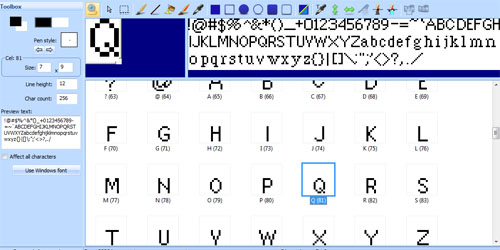

Font Editor¶
Fonts in SCI are 1-bit bitmapped characters. SCI0 fonts always have 128 characters, while SCI1 and above allow up to 256 characters. Black represents opaque and white represents transparent.
The drawing tools are mostly shared with views and cursors. Please read the section on drawing tools for a full description of what each tool does.
Importing fonts from Windows¶
Choose Use Windows font from the Font menu or the Toolbox pane. This brings up the Choose Font dialog when you can select the font, size and style. SCICompanion will then render these out to bitmaps and import them into your SCI font. SCICompanion will generate as many characters as you have in your font, so on SCI1 and above make sure to set the character count (in the Toolbox pane) beforehand.
Windows fonts are generally designed to look good at higher resolutions than what you see in SCI. So don’t expect miracles here. Most likely, you will need to use the smallest font size possible, and make several adjustments afterwards in the editor.
Preview text¶
In the Toolbox pane you can enter preview text which will be used to render the font sample in the upper right of the Font Editor.